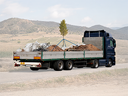
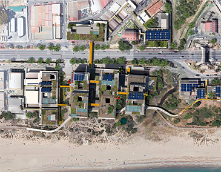
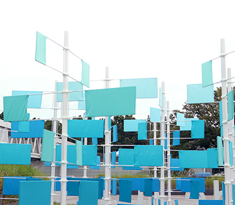
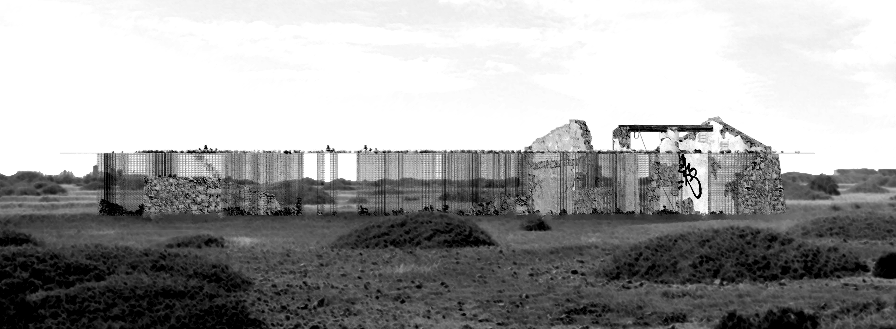

Enrique Sanz-Gadea
Archive
About
Contact
All
Architecture
Research
Art
Design
Photography
Search
0
entries
64 kilómetros
Architecture installation ( 2026 )

Eco Poiesis urbana
Architecture academic project ( 2025 )

Haus der Materialisierung
Academic architecture project ( 2022 )
Sailing Island
Public art installation ( 2022 )

Umbráculo en Tabarca
Academic architecture project ( 2021 )
